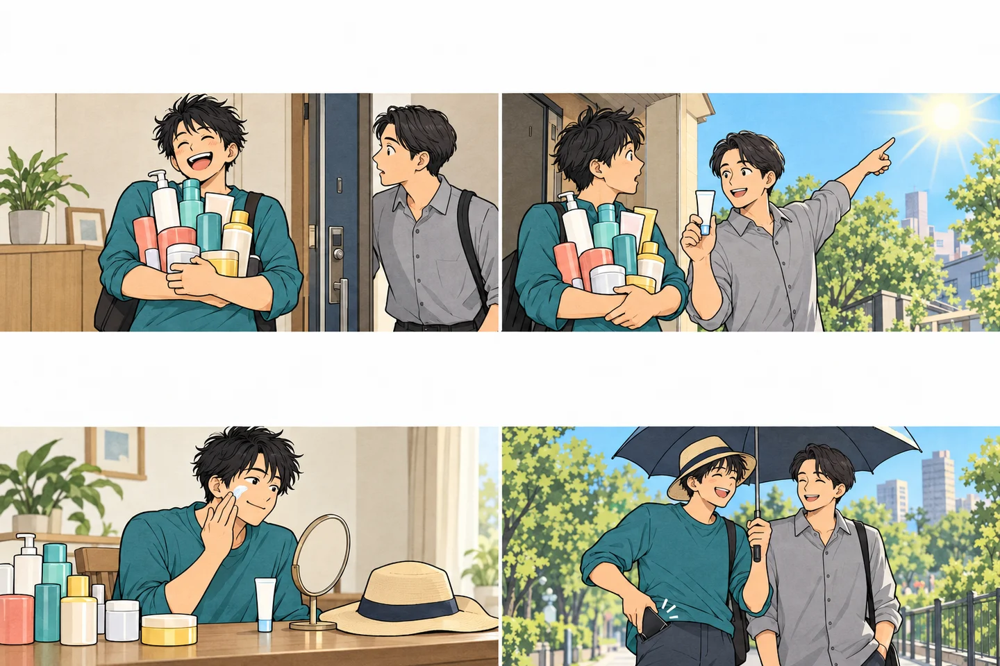
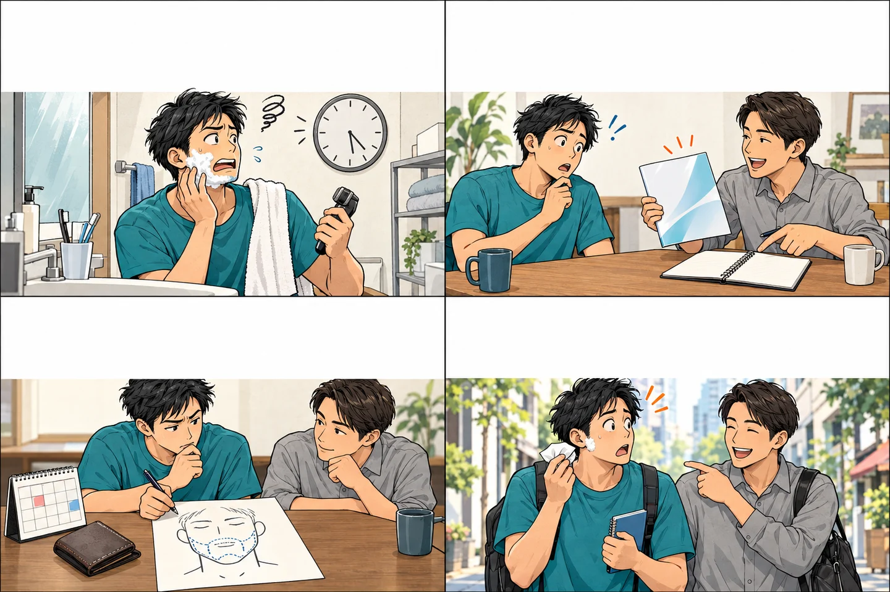
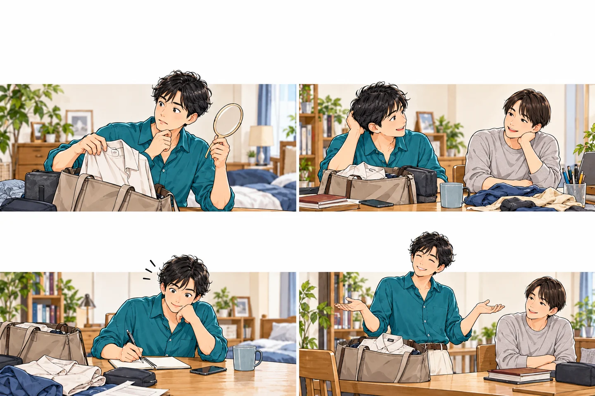
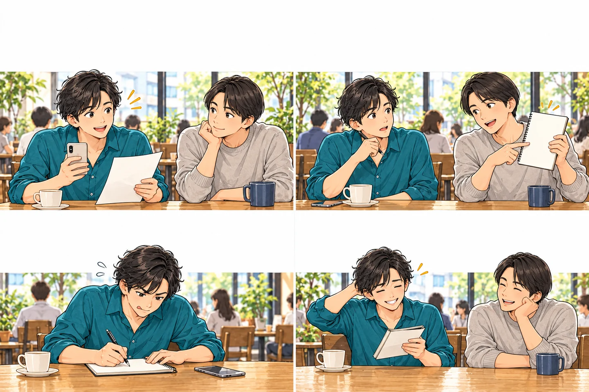

広告：当サイトは広告を掲載しています。最新の料金・条件は公式でご確認ください。
朝のヒゲ剃りを、少しラクにしたい。肌のために何か始めたい。大きく変えなくても、いつもの手入れからできることがあります。自分に合う方法を、ゆっくり選んでいきましょう。
いつもの手入れ

肌のために何か始めたいなら、日差しへの備えも忘れずに。毎日の支度に取り入れたい、手入れの話。

ヒゲ脱毛を考える

出かける前に
気になる話から、ひとつずつ。
